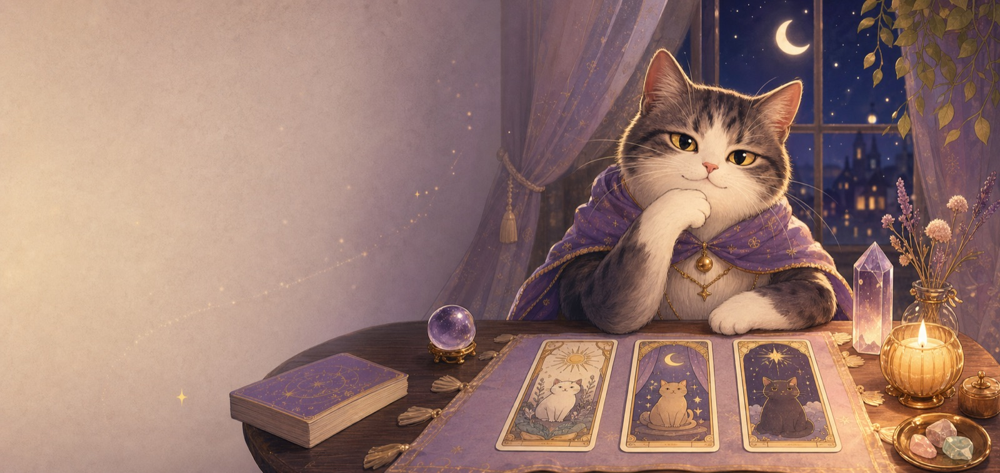
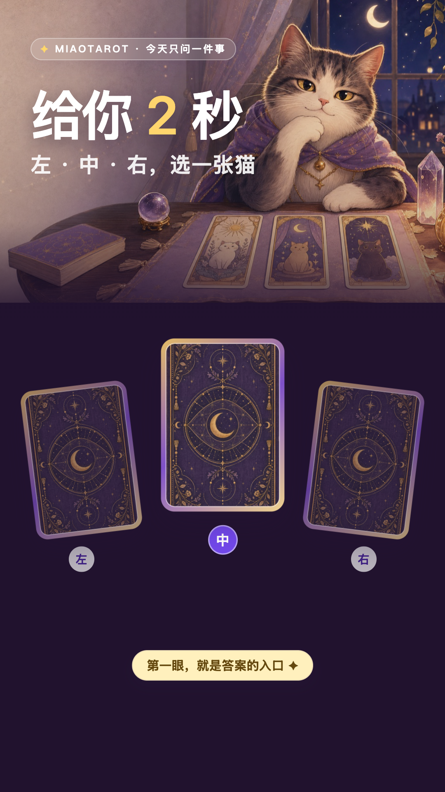
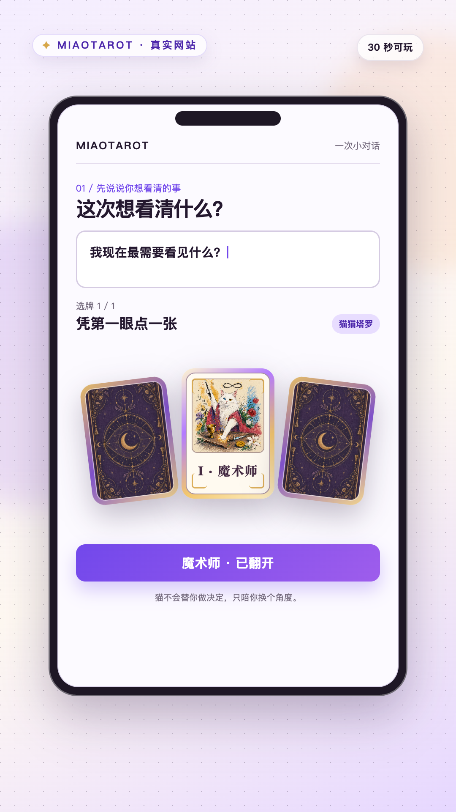
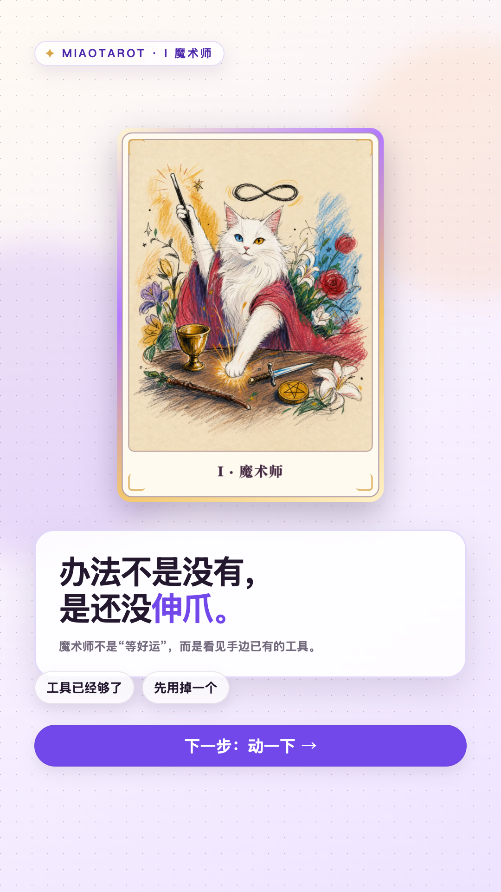
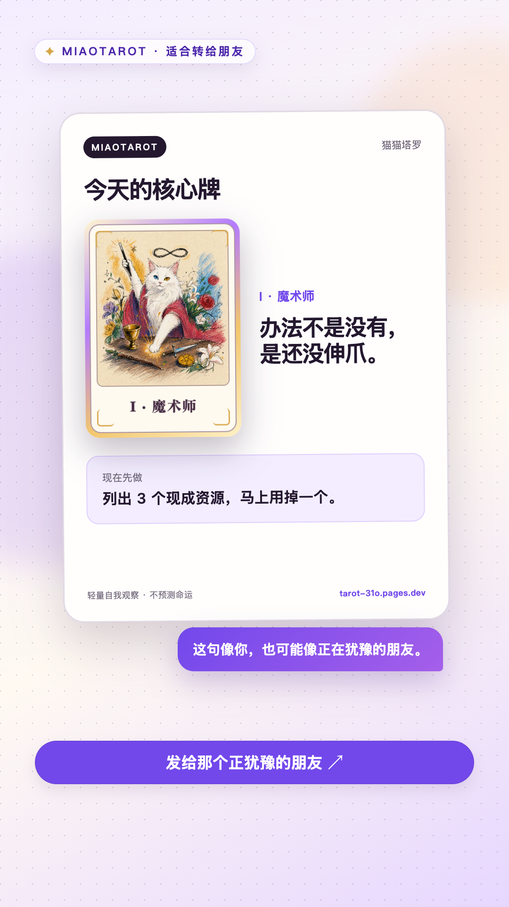
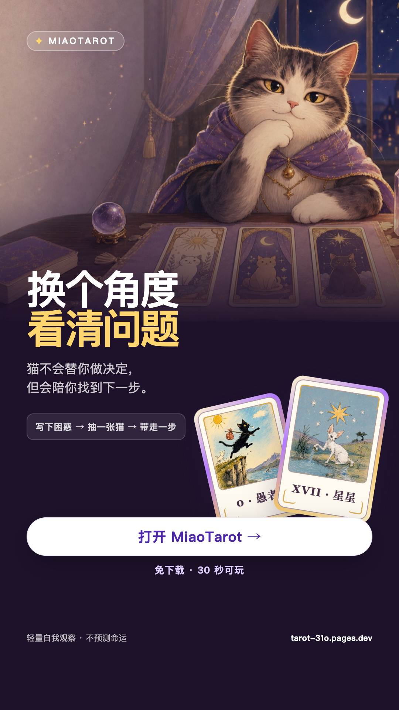

`左 / 中 / 右` 是一个两秒能完成的微任务。观众做完选择，自然会等揭晓。
9:16 Social Launch · 20.1s
先让观众选一张猫，再介绍游戏。
一支观众从第一帧就已经开始玩的短视频：两秒做选择，五秒看见真实产品，十秒得到一句想发给朋友的猫猫观察，最后用一个低风险入口完成点击。

1080 × 1920 Remotion master
不是录屏，是直接渲染成片。
卡框、中文、按钮、真实网站流程和字幕全部由 React DOM 在 1080×1920 画布上逐帧生成；猫牌使用 1020×1428 原始 5:7 素材。没有把网页截图放大，也没有录屏后二次压缩。
H.264 · 30fps · AAC 192kbps · CRF 14
五段场景、旁白与三组反馈音效都来自同一条可复现时间线。
五段场景、旁白与三组反馈音效都来自同一条可复现时间线。
Creative decision
不是更玄，是更快参与。
近期平台方法论和同类案例共同指向三个可迁移信号：第一秒给动作，不给片头；真实体验比泛化 AIGC 视觉更能承接点击；结果必须能被用户带走、复看或发给一个具体的人。
用真实提问、3 张牌和结果卡证明玩法；`免下载 · 30 秒` 同时解除成本和时间顾虑。
`办法不是没有，是还没伸爪。` 可以被截图，也能自然发给那个还在等更好时机的人。
Conversion path
一条片，只做三件事。
不在结尾同时要求关注、评论、收藏、转发和点击。参与、价值、入口形成一条直线；分享作为结果本身的自然用途出现。
参与：选一张
2 秒微任务制造完成感和揭晓期待。
价值：看见一句话
猫句负责记忆，标准牌义负责可信和行动。
入口：继续完整抽牌
唯一 CTA：打开 MiaoTarot，30 秒可玩。
Storyboard
五个节拍，20.1 秒。
以下是 Remotion 从真实 20.1 秒时间线直接输出的 1080×1920 PNG 帧，不是浏览器截图；这些帧本身也可直接改成小红书滑动图文。

01 · 观众已经在选
三张真实猫牌落桌；标题、数字和爪印共同引导视线。

02 · 选择接进真 UI
第 5 秒前证明是真实可玩的产品，不是只有一张猫图的滤镜。

03 · 猫句先命中
3D 翻牌是唯一高潮；先给可记忆的猫句，再给标准牌义。

04 · 从“像我”到“发给他”
真实分享图证明结果能带走；传播来自指向朋友，不靠好运诱导。

05 · 唯一入口
紫斗篷猫回到桌前；只留一个可理解、低风险的试玩动作。
Voice & copy
最终旁白。
系统普通话声线实测 20.10 秒。翻牌、重点句和 CTA 已按实际静音点校准；播放时不是估算卡点。
给你两秒。左、中、右，选一张猫。
选中间？翻开。
魔术师说：办法不是没有，是还没伸爪。
你手上的工具已经够了。下一步，是动一下。
免下载，三十秒就能抽。打开 MiaoTarot，让猫陪你换个角度看问题。
屏幕常驻信任说明：`轻量自我观察 · 不预测命运`。结尾不朗读传播提示，避免 CTA 分心。
Creative system
一条母版，三个系列。
中段真实抽牌流程保持不动，只替换开头问题、结果牌和最后一句。这样能持续出片、降低素材疲劳，也能清楚知道哪个变量带来提升。
给你 2 秒，选一张猫。
魔术师：行动。分享给那个还在等“更好时机”的人。
你们卡住的，真的是感情吗？
恋人 / 正义：各抽一次，看看你们看见的是不是同一件事。
今天先别定计划，先选一张。
星星 / 愚人：保存这只猫，晚上再回来对照。
Research sources
方法论与近期案例。
平台方法论优先使用官方来源；Starla / Starcrossed 的收入和播放数据来自第三方案例方自报，因此只作为创意信号，不当作已审计业绩。
- TikTok · Creativity pays dividends（2025）
- TikTok · Ad campaign creative guide
- Meta · Reels ads creative guidance
- Meta · Playable ads
- TikTok · Match Collector case
- TikTok · Fidget Town case
- 盛天网络 · 给麦 AI 占星（2025）
- Starla third-party case（2025）
- Starcrossed third-party case（2026）
- Astroscope third-party case（2025）